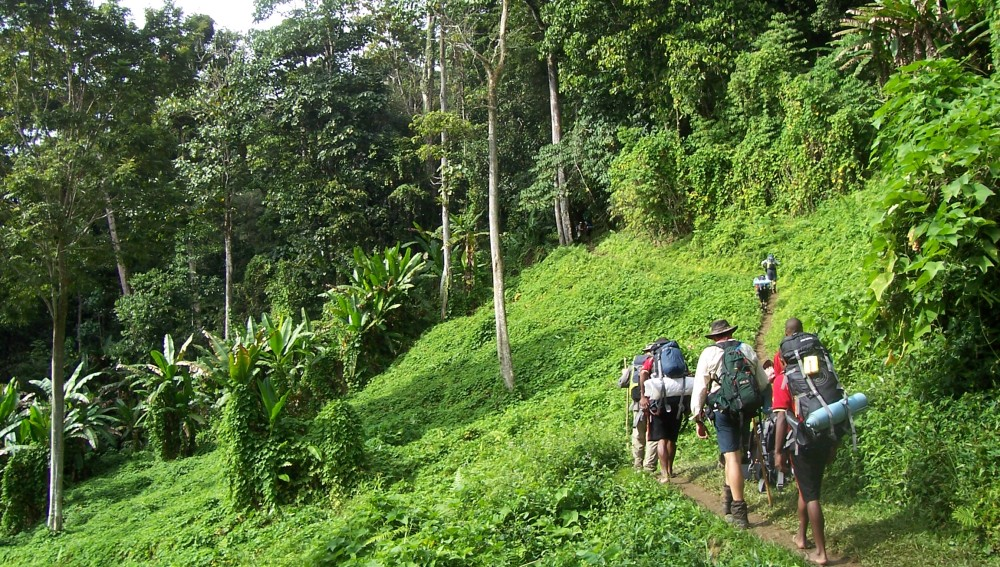

|  | ¿Te imaginas caminar por el corazón del Amazonas? Y recorrer caminos protegidos por hospitalarias comunidades nativas que no tienen celo de compartir sus secretos; o avanzar por trochas que cruzan la Reserva Natural Pacaya Samiria en compañía de aves exóticas que surcan el cielo y traviesos monos que espían desde los árboles mientras te refrescas en las aguas de alguna laguna; o encontrarte con caminos de gigantes en los que encontrarás ceibas amazónicas que tocan el cielo y victorias amazonicas que adornan los lagos como inmensas alfombras de increíble belleza. En Loreto las opciones son varias, eso sí, deben recorrerse en compañía de un guía experto. ¡Prepárate para una de las mejores experiencias de tu vida! |